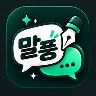

이미지 · 만화 컷 · SNS 템플릿을 추가할 수 있어요.
홈 화면과 바탕화면에서 바로 시작하세요.
실행에는 인터넷 연결이 필요해요. 작업은 현재 기기·브라우저에 저장됩니다. 다른 기기로 옮길 때는 프로젝트 파일을 저장해서 열어주세요.
이 기기의 현재 브라우저에 자동저장됩니다. 다른 기기로 옮기거나 백업할 때는 「프로젝트 저장」으로 파일을 내려받으세요. 브라우저 데이터를 지우면 저장본도 삭제됩니다.
한글이 없는 폰트는 한글 부분이 대체 글꼴로 보일 수 있습니다. 영문도 함께 비교해보세요.
검색 결과가 없습니다.
크기를 입력하면 화면 방향이 자동으로 맞춰집니다. 정사각형도 지원해요. 가로 320~16,000px · 세로 320~30,000px · 전체 4,000만 픽셀 이하. 기존 사진과 대사의 비율은 유지됩니다.
배치를 골라 미리 확인한 뒤 적용하세요. 사진은 각 컷의 모양대로 잘립니다.
대분류를 골라 추가하세요. 블아는 전체 세트를 넣은 뒤 체크박스로 요소를 선택할 수 있어요.
황동 프레임 · 붉은 명패 · 편집 가능한 8종 UI. 그림과 문구는 직접 바꿔 넣을 수 있어요.
파란 이름표·흰 문양 대화창 / 검은 안내창 / 예·아니요 선택창
이름·레벨·성별·타입·현재/최대 HP와 대사·행동 메뉴를 편집하세요.
입체 도트 테두리 · 두 줄 대사 · 트레이너/야생 조우와 6칸 파티 표시. 그림과 문구를 편집하세요.
흰 대화창과 청록색 이름표 · 이름·대사·배경 사진과 버튼 표시를 편집할 수 있어요.
Day / Night · 가로 16:9 화면. 배경과 캐릭터를 따로 넣거나 완성된 그림 한 장을 배경으로 넣을 수 있어요.
상태 이름 · 수치 편집, 그림 교체, HP와 탄약 표시를 지원해요.
전체 UI를 한 번에 추가합니다. 대사 탭에서 요소를 켜고 끄거나 각각 편집하세요.
그라데이션 시작점까지 그림을 넣고, 프레임 안에서 위아래 위치를 조절합니다.
새 세로 장에 추가됩니다. 프사·배경·피드 사진과 문구를 자유롭게 바꿔주세요.
배치를 골라 추가한 뒤 대사 탭에서 사진과 채팅을 편집해. 닉네임·프로필은 각각 켜고 끌 수 있어.
원본 PNG의 글자는 지워지지 않아. 빈 말풍선 PNG를 쓰면 자유롭게 조합할 수 있어.
회전 랜덤을 올리면 선택한 방향에 무작위 회전이 더해져. 필압은 펜 입력에서 적용되고 마우스·손가락은 기본 크기로 그려져.